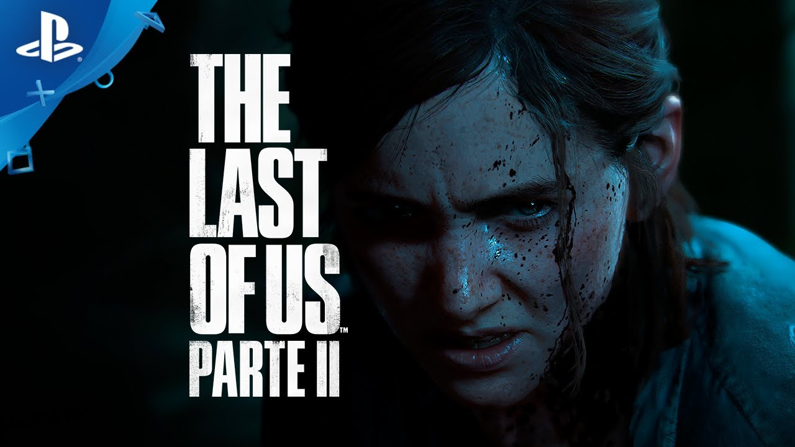

The Last of Us 2 es un videojuego de acción y aventuras, con elementos de supervivencia, enmarcado en un mundo postapocalíptico donde habitan unos seres infectados. Al igual que la primera parte, esta continuación o Part II de The Last of Us busca hacerse fuerte en mecánicas jugables como la exploración o el combate con un fuerte elemento táctico, no sólo plantando cara a los zombies y criaturas de pesadilla de su mundo de infectados, sino también ofreciendo resistencia a los humanos... Peores en algunos casos que las más infernales de las criaturas.
Desarrollador: Naughty Dog Editor: Sony Género: Acción, Acción y aventura (Apocalíptico, Monstruos y Terror) Jugadores:1 Soporta:PS4 Pro Lanzamiento: 19 de Junio de 2020 (Pegi: +18)